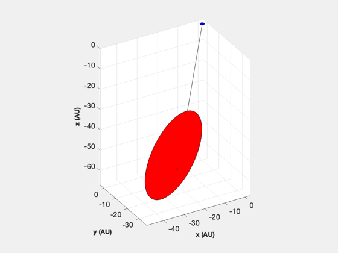
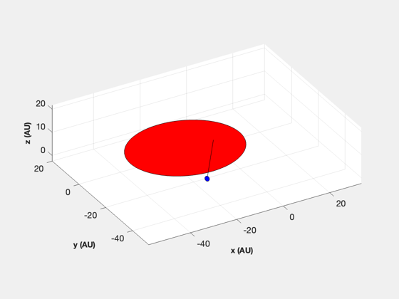

Draw the Earth-relative geometry of the Alpha-Centauri binary star system
------------------------------------------------------------------------
See also AlphaCentauriMissionAnalysis
------------------------------------------------------------------------
Contents
Units conversions and scales
au2km = Constant('au');
sizeScale = 10;
distScale = 1000;
position of Alpha Centauri A with respect to Earth
rA = HMS2Rad(14,39,36.5);
dec = DMS2Rad(-60,50,02.3);
uPosAC = [cos(rA)*cos(dec);sin(rA)*cos(dec);sin(dec)];
distAC = 63241.1;
posAC = uPosAC*distAC;
posACs = posAC/distScale;
orbit of binary star system (B about A)
sma = 17.57*1.338;
ecc = 0.5179;
inc = 79.2*pi/180;
raan = 204.85*pi/180;
prg = 241.65*pi/180;
el = [sma, inc, raan, prg, ecc, 0];
uNormal = OrbNEl( inc, raan );
w = linspace(0,2*pi);
rE = [cos(w);sin(w);zeros(size(w))];
position of star B about star A in perifocal frame of Alpha-Centauri
rBMag = sma*(1-ecc^2) ./ (1+ecc*cos(w));
rBpf = [ rBMag.*cos(w); rBMag.*sin(w); zeros(size(w)) ];
rotate to be defined with respect to standard inertial frame
cMat = CP2I( inc, raan, prg );
rB = cMat*rBpf;
translate to scaled position of Alpha-Centauri system w.r.t. Earth
rBE = rB + repmat(posACs,1,length(w));
NewFig('Scaled View of Alpha Centauri and Earth Orbit in ECI');
hold on, grid on, rotate3d on
line([0 posACs(1)],[0 posACs(2)],[0 posACs(3)],'color','k');
fill3(rE(1,:),rE(2,:),rE(3,:),'b');
fill3(rBE(1,:),rBE(2,:),rBE(3,:),'r');
axis equal, view(-30,30)
XLabelS('x (AU)'), YLabelS('y (AU)'), ZLabelS('z (AU)')
posEs = cMat'*-posACs;
rEB2 = cMat' * rE + repmat(posEs,1,length(w));
NewFig('Scaled View of Alpha Centauri and Earth Orbit in A.C. Perifocal');
hold on, grid on, rotate3d on
line([0 posEs(1)],[0 posEs(2)],[0 posEs(3)],'color','k');
fill3(rEB2(1,:),rEB2(2,:),rEB2(3,:),'b');
fill3(rBpf(1,:),rBpf(2,:),rBpf(3,:),'r');
axis equal, view(-30,30)
XLabelS('x (AU)'), YLabelS('y (AU)'), ZLabelS('z (AU)')
 